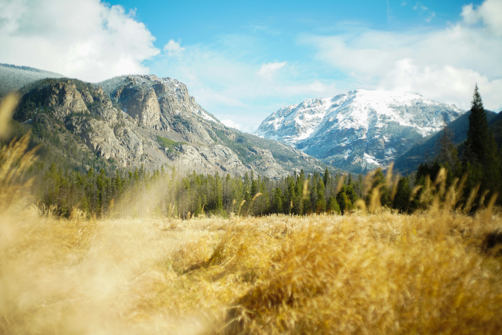
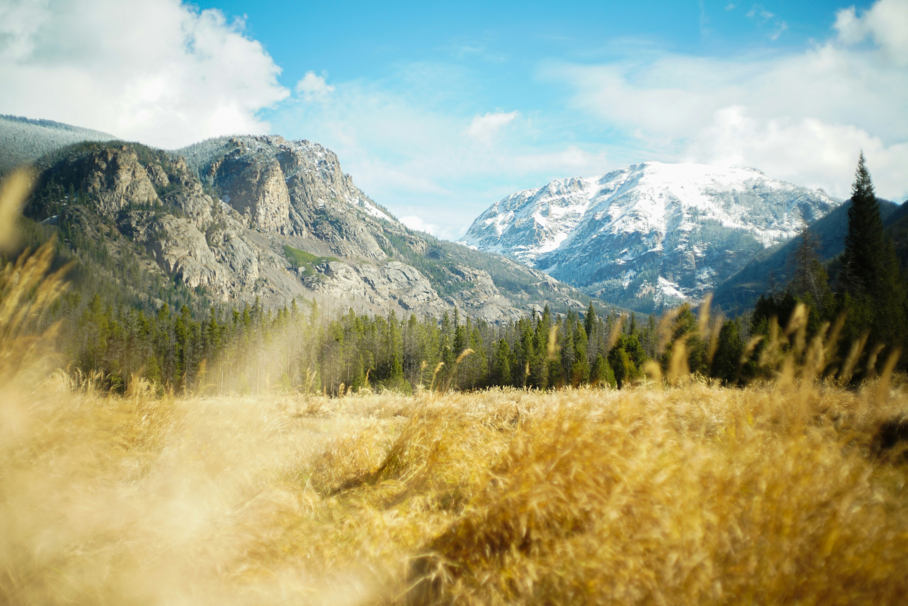
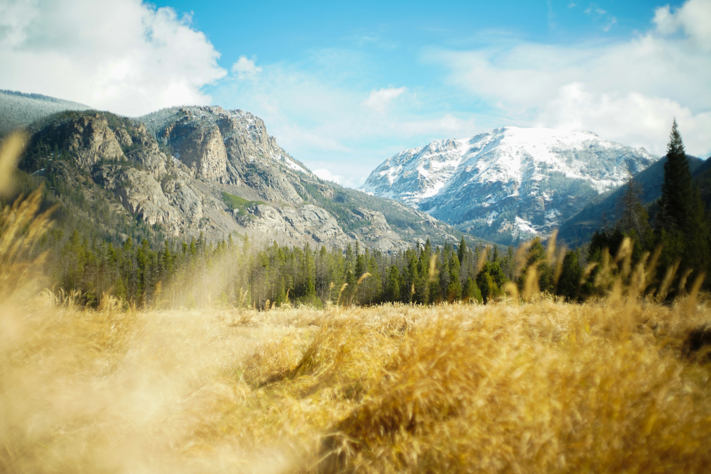

Сайт был разработан: Данилой Чемежевским, Нью Йорк

Киргизстан — это маленькая горная страна в Центральной Азии, известная своей потрясающей природой, разнообразными ландшафтами и богатой культурной наследием. Столицей является Бишкек, который отличается советской архитектурой и это крупнейший город страны.Одной из главных особенностей Киргизстана является его уникальная природа. Здесь находятся величественные горы Тянь-Шаня, множество озёр, среди которых выделяется Иссык-Куль — одно из самых глубоких и больших высокогорных озёр мира, знаменитое своими целебными свойствами.


Китай — это одна из крупнейших стран мира как по площади, так и по численности населения. Столицей страны является Пекин, который известен своей богатой историей и культурным наследием. Китайская цивилизация насчитывает тысячи лет и включает в себя множество значительных достижений в области науки, искусства и философии.Китай известен своими архитектурными чудесами, такими как Великая китайская стена, Запретный город и Храм Неба. Великая китайская стена, построенная для защиты от иноземных набегов, тянется на тысячи километров и является одним из самых известных символов страны.

Испания — это страна, расположенная на юго-западе Европы, на Пиренейском полуострове. Она известна своим богатым культурным наследием, разнообразием ландшафтов и разнообразной кухней. Столицей Испании является Мадрид, который является крупнейшим городом страны и важным культурным, политическим и экономическим центром.Испания имеет множество исторических и культурных достопримечательностей. Например, Барселона известна своей уникальной архитектурой, включая работы знаменитого архитектора Антонио Гауди, такие как Саграда Фамилия и Парк Гуэль. Севилья славится своим собором и красавцем Алькасаром, а в Гранаде находится знаменитая Альгамбра — дворцовый комплекс, являющийся выдающимся примером мавританской архитектуры.
Германия — это страна, расположенная в Центральной Европе, известная своим богатым культурным наследием, историей и значительной экономической мощью. Столицей Германии является Берлин, который является не только политическим, но и культурным центром страны с множеством музеев, галерей и исторических памятников.Германия славится своей историей, начиная с древнеримских времен и заканчивая событиями XX века, такими как две мировые войны и последующее разделение и объединение страны. Среди наиболее известных исторических достопримечательностей можно отметить Бранденбургские ворота, Берлинскую стену, Нюрнбергский замок и памятники, связанные с Второй мировой войной.